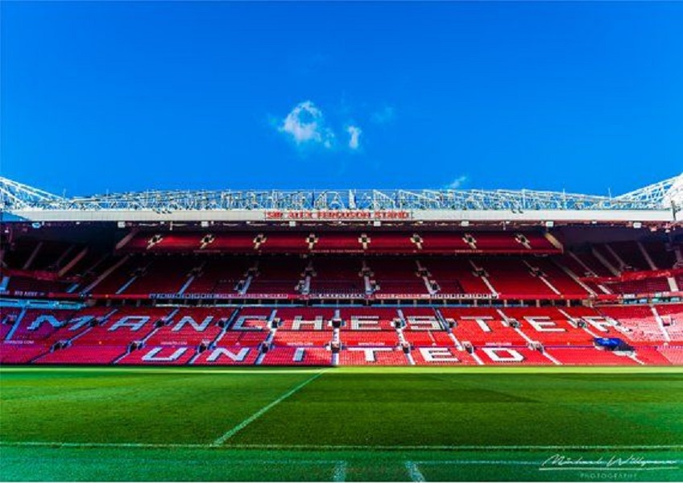

Sejarah
Manchester United adalah klub Inggris yang paling mendunia. Mereka adalah klub Inggris pertama yang bermain di Piala Eropa dan klub Inggris pertama yang memenangkannya, dan mereka adalah satu-satunya klub Inggris yang pernah menjadi juara dunia Piala Dunia antar Klub.
Klub ini didirikan pada 1878 dengan nama Newton Heath LYR Football Club oleh pekerja di Lancashire dan Yorkshire Railway Depot. Mereka bermain di Liga Sepakbola untuk pertama kalinya pada tahun 1892, namun terdegradasi dua tahun kemudian. Klub ini menjadi Manchester United pada tahun 1902, ketika sekelompok pengusaha lokal mengambil alih. Saat itulah mereka mengadopsi baju merah yang akan menjadi sangat dikenal hingga saat ini.
Klub ini menjuarai liga kali pertama mereka di bawah Ernest Mangnall pada tahun 1908 dan 1911, menambahkan Piala FA pertama mereka pada tahun 1909. Mangnall kemudian meninggalkan United untuk bergabung dengan Manchester City pada tahun 1911.
Manchester United mengalami masa yang suram setelah naik turun divisi dalam kurun waktu 30 tahun sebelum kemudian diambil alih oleh Matt Busby setelah berakhirnya Perang Dunia ke-2. Busby mengubah bentuk klub, menetapkan kebijakan mengembangkan pemain muda yang nantinya terbukti menghasilkan sukses besar. United memenangkan Piala FA tahun 1948 dan runner up di liga dalam tiga musim berturut-turut 1947-1949, kemudian, pada tahun 1952, Busby memenangkan gelar liga pertama United selama 41 tahun.
Tim yang memenangkan liga pada tahun 1956 menjadi dikenal sebagai “Busby Babes”, karena usia rata-rata yang hanya 22 tahun. Ini termasuk Duncan Edwards, seorang pemain tangguh dengan skill luar biasa, dan dua pencetak gol fantastis dalam diri Tommy Taylor dan Dennis Viollet. Mereka meraih kembali gelar musim berikutnya, dan mengikuti Piala Eropa yang mendapat tekanan dari otoritas sepakbola Inggris untuk mundur dari Football League. United membantai Anderlecht 10-0 dalam pertandingan kandang pertama mereka, dan mencapai semi-final sebelum kalah dari Real Madrid.
Setahun kemudian, tim itu dalam perjalanan pulang setelah kemenangan melawan Red Star Belgrade di perempat final ketika kecelakaan pesawat di Munich menewaskan 23 jiwa, delapan di antaranya pemain: Roger Byrne, Eddie Colman, Duncan Edwards, Mark Jones, Billy Whelan, Tommy Taylor, David Pegg dan Geoff Bent. Tragedi ini kemudian dikenal dengan nama “Munich Air Disaster”.
Busby lolos dari kecelakaan itu dan, dan setelah kehilangan hampir sebagian besar pemain terbaiknya Ia membangun timnya kembali dari awal pada awal tahun 1960-an dengan berporos pada “The Holy Trinity” yaitu Bobby Charlton, George Best dan Denis Law. United lalu berhasil memenangkan Piala FA tahun 1963 dan juara liga tahun 1965 dan 1967; perjalanan Busby lengkap sudah dengan berhasil mengalahkan Benfica di final Piala Eropa tahun 1968. United mengalahkan Benfica 4-1 lewat perpanjangan waktu di Wembley, dengan dua gol yang dicetak oleh Charlton, yang juga lolos dari kecelakaan itu 10 tahun sebelumnya.
Ketika Busby mengundurkan diri pada tahun 1969, United mengalami penurunan prestasi drastis. Setelah hanya berhasil menghindari degradasi pada tahun 1973, United akhirnya terdegradasi juga satu tahun kemudian. Ironisnya, sang legenda United Denis Law-bermain untuk Manchester City – mencetak gol kemenangan melawan mereka di Old Trafford. Gol yang mengirim United ke divisi 2.
United langsung memenangkan Divisi Dua pada tahun tersebut, tetapi pada tingkat tertinggi mereka masih belum dapat mecaatkan prestasi terbaik. Di bawah kendali Tommy Docherty,United lebih berprestasi di ajang Piala FA. Mereka mengalahkan tim Divisi Dua Southampton di final Piala FA 1976, dan menghancurkan Liverpool dengan mengalahkan mereka 2-1 di Wembley setahun
kemudian. Docherty dipecat tak lama setelah kemenangan Piala FA itu, setelah berselingkuh dengan istri fisioterapi tim; penggantinya, Dave Sexton, lebih hati-hati, dan banyak penggemar merasa gaya bermainnya mengkhianati filosofi klub.
Sexton bekerja selama empat tahun dan sempat membawa United finish runner-up di liga dan Piala FA, tapi ia dipecat pada tahun 1981 meski memenangkan tujuh pertandingan terakhir. Penggantinya, Ron Atkinson, membawa United kembali ke era 70-an dan era Docherty. Dengan penekanan pada sepakbola menyerang dan melebar, dan membeli pemain Inggris Bryan Robson yang luar biasa,United menikmati lima tahun yang mengesankan di bawah Atkinson. Mereka memenangkan Piala FA tahun 1983 dan 1985 – tapi Atkinson tidak dapat mengakhiri menunggu lama untuk menjuarai liga, dan digantikan oleh Alex Ferguson di November 1986.
Sulit membayangkannya sekarang, tapi beberapa tahun pertama Ferguson di Old Trafford terasa sangat sulit. United menyelesaikan liga dengan finis 11, 2, 11 dan 13 dalam empat musim pertamanya, dan hanya sebuah kemenangan di Final Piala FA pada tahun 1990 yang merupakan pencapaian yang bagus. Ferguson tidak pernah melihat kembali dari keberhasilan bahwa: itu adalah yang pertama dari 25 piala utama yang ia akan menangi selama 20 tahun ke depan, termasuk 11 gelar liga.
United mengalahkan Barcelona untuk memenangkan Piala Winners pada tahun 1991, namun hanya ada satu hadiah mereka benar-benar ingin: suatu titel liga pertama sejak tahun 1967. Akhirnya tiba pada tahun 1993, musim pertama Liga Premier, dan dikatalisis oleh bergabungnya Eric Cantona yang fenomenal pada pertengahan musim dari juara musim lalu Leeds United.
Klub ini meraih gelar double pertama pada tahun 1994, dengan Cantona bersama para pemain muda menang lagi pada tahun 1996. Sekarang, Ferguson dan United memiliki Everest baru: Piala Champions. Mereka meraihnya pada tanggal 26 Mei 1999 – apa yang akan menjadi ulang tahun ke-90 Sir Matt Busby’s – ketika mereka mengalahkan Bayern Munich 2-1 dalam sebuah pertandingan yang menakjubkan, dengan United mencetak dua gol di injury time. Dengan Double lain sudah ada di tas, United dengan demikian menjadi klub Inggris pertama yang memenangkan Treble. Kemudian di tahun yang sama mereka mengalahkan Palmeiras untuk menjadi juara dunia.
United kemudian memenangkan tiga gelar liga berturut-turut berturut-turut 1999-2001 dan, meskipun gejolak besar disebabkan oleh pengambilalihan kontroversial dari keluarga Glazer di tahun 2005, pencapaian tersebut berhasil diulang oleh generasi baru antara 2007 dan 2009. Mereka juga menambahkan gelar ketiga United Piala Eropa, mengalahkan Chelsea melalui adu penalti di final dramatis di Moskow, sementara gelar liga tahun 2009 menjadikan United meraih 18 gelar liga, sama dengan saingan besar mereka Liverpool. Gelar ke 19 menghindari mereka pada 2009-10 tetapi di musim 2010-11 rekor itupun tercipta. Manchester United secara sah ditahbiskan menjadi Raja Inggris setelah unggul 9 angka atas Chelsea di akhir kompetisi untuk merengkuh titel yang ke-19.